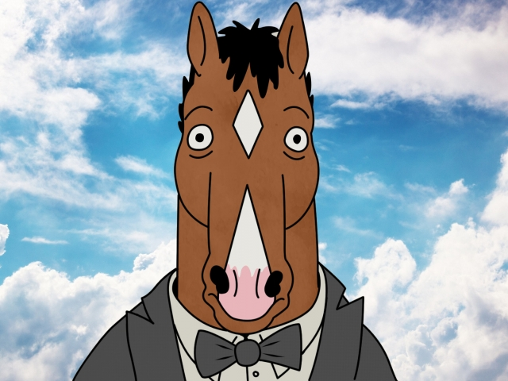

This is a website for BoJack's fans to find information about the characters and discussions of episodes in this show

25 min | Animation, Comedy, Drama | August 22, 2014
🎬
creator: Raphael Bob-Waksberg
BoJack Horseman was the star of the hit TV show "Horsin Around" in the 90's, now he's washed up, living in Hollywood, complaining about everything, and wearing colorful swearters